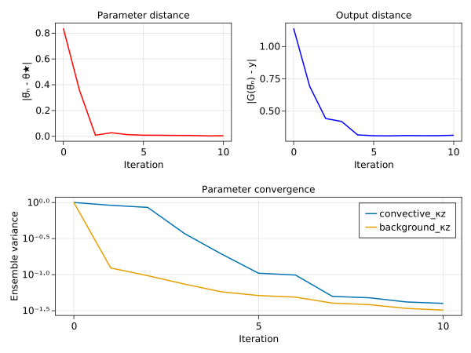
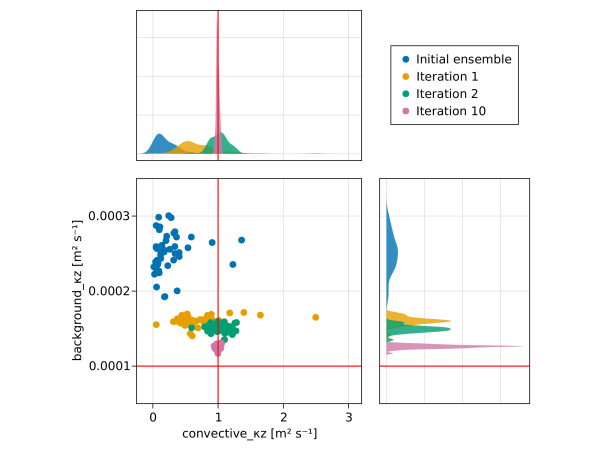

Perfect convective adjustment calibration with Ensemble Kalman Inversion
This example calibrates a convective adjustment model in the "perfect model context". In this context, synthetic observations are generated by a convective adjustment model with "true" parameters. The true parameters are then "rediscovered" by calibrating the model to match the synthetic observations.
We use the discrepency between observed and modeled buoyancy $b$ to calibrate the convective adjustment model. The calibration problem is solved by Ensemble Kalman Inversion. For more information about Ensemble Kalman Inversion, see the EnsembleKalmanProcesses.jl documentation.
Install dependencies
First let's make sure we have all required packages installed.
using Pkg
pkg"add OceanTurbulenceParameterEstimation, Oceananigans, Distributions, CairoMakie"using OceanTurbulenceParameterEstimation, LinearAlgebra, CairoMakieWe reuse some some code from a previous example to generate observations,
examples_path = joinpath(pathof(OceanTurbulenceParameterEstimation), "..", "..", "examples")
include(joinpath(examples_path, "intro_to_inverse_problems.jl"))
data_path = generate_synthetic_observations()
observations = SyntheticObservations(data_path, field_names=:b, normalize=ZScore)SyntheticObservations with fields (:b,)
├── times: [0.0, 14400.0, 28800.0, 43200.0]
├── grid: 1×1×32 RectilinearGrid{Float64, Oceananigans.Grids.Flat, Oceananigans.Grids.Flat, Oceananigans.Grids.Bounded} on Oceananigans.Architectures.CPU with 0×0×1 halo
├── path: "convective_adjustment.jld2"
├── metadata: (:parameters, :grid, :coriolis, :closure)
└── normalization: Dict{Symbol, ZScore{Float64}} with 1 entryand an ensemble_simulation,
ensemble_simulation, closure★ = build_ensemble_simulation(observations; Nensemble=50)(Simulation{typename(Oceananigans.Models.HydrostaticFreeSurfaceModels.HydrostaticFreeSurfaceModel){typename(Oceananigans.Architectures.CPU), Float64}}
├── Model clock: time = 0 seconds, iteration = 0
├── Next time step: 10 seconds
├── Elapsed wall time: 0 seconds
├── Stop time: 12 hours
├── Stop iteration : Inf
├── Wall time limit: Inf
├── Callbacks: typename(OrderedCollections.OrderedDict) with 4 entries:
│ ├── stop_time_exceeded => typename(Oceananigans.Simulations.Callback)
│ ├── stop_iteration_exceeded => typename(Oceananigans.Simulations.Callback)
│ ├── wall_time_limit_exceeded => typename(Oceananigans.Simulations.Callback)
│ └── nan_checker => typename(Oceananigans.Simulations.Callback)
├── Output writers: typename(OrderedCollections.OrderedDict) with no entries
└── Diagnostics: typename(OrderedCollections.OrderedDict) with no entries, ConvectiveAdjustmentVerticalDiffusivity: (background_κz=0.0001, convective_κz=1.0, background_νz=1.0e-5, convective_νz=0.9))The handy utility function build_ensemble_simulation also tells us the optimal parameters that were used when generating the synthetic observations:
@show θ★ = (convective_κz = closure★.convective_κz, background_κz = closure★.background_κz)(convective_κz = 1.0, background_κz = 0.0001)The InverseProblem
To build an inverse problem we first define free parameters. Here we calibrate convective_κz and background_κz, using log-normal priors to prevent the parameters from becoming negative:
priors = (convective_κz = lognormal_with_mean_std(0.3, 0.5),
background_κz = lognormal_with_mean_std(2.5e-4, 2.5e-5))
free_parameters = FreeParameters(priors)FreeParameters with 2 parameters
├── names: (:convective_κz, :background_κz)
└── priors: Dict{Symbol, Any}
├── convective_κz => LogNormal{Float64}(μ=-1.868540777965907, σ=1.152881584240091)
└── background_κz => LogNormal{Float64}(μ=-8.299024805528612, σ=0.0997513451195927)The InverseProblem is then constructed from observations, ensemble_simulation, and free_parameters,
calibration = InverseProblem(observations, ensemble_simulation, free_parameters)InverseProblem{ConcatenatedOutputMap}
├── observations: SyntheticObservations of (:b,) on 1×1×32 RectilinearGrid{Float64, Oceananigans.Grids.Flat, Oceananigans.Grids.Flat, Oceananigans.Grids.Bounded} on Oceananigans.Architectures.CPU with 0×0×1 halo
├── simulation: Simulation on 50×1×32 RectilinearGrid{Float64, Oceananigans.Grids.Flat, Oceananigans.Grids.Flat, Oceananigans.Grids.Bounded} on Oceananigans.Architectures.CPU with 0×0×1 halo with Δt=10.0
├── free_parameters: (:convective_κz, :background_κz)
└── output map: ConcatenatedOutputMapFor more information about the above steps, see Intro to observations and Intro to InverseProblem.
Ensemble Kalman Inversion
Next, we construct an EnsembleKalmanInversion (EKI) object,
The calibration is done here using Ensemble Kalman Inversion. For more information about the algorithm refer to EnsembleKalmanProcesses.jl documentation.
noise_variance = observation_map_variance_across_time(calibration)[1, :, 1] .+ 1e-5
eki = EnsembleKalmanInversion(calibration; noise_covariance = Matrix(Diagonal(noise_variance)))EnsembleKalmanInversion
├── inverse_problem: InverseProblem
├── parameter_distribution: EnsembleKalmanProcesses.ParameterDistributionStorage.ParameterDistribution
├── ensemble_kalman_process: EnsembleKalmanProcesses.EnsembleKalmanProcessModule.EnsembleKalmanProcess{Float64, Int64, EnsembleKalmanProcesses.EnsembleKalmanProcessModule.Inversion}
├── mapped_observations: 128-element Vector{Float64}
├── noise_covariance: 128×128 Matrix{Float64}
├── inverting_forward_map: OceanTurbulenceParameterEstimation.EnsembleKalmanInversions.var"#inverting_forward_map#12"
├── iteration: 0
└── resampler: NaNResampler{FullEnsembleDistribution}and perform few iterations to see if we can converge to the true parameter values.
iterate!(eki; iterations = 10)(convective_κz = 0.9951799328449439, background_κz = 0.00012592607473230384)Last, we visualize the outputs of EKI calibration.
θ̅(iteration) = [eki.iteration_summaries[iteration].ensemble_mean...]
varθ(iteration) = eki.iteration_summaries[iteration].ensemble_var
weight_distances = [norm(θ̅(iter) - [θ★[1], θ★[2]]) for iter in 0:eki.iteration]
output_distances = [norm(forward_map(calibration, θ̅(iter))[:, 1] - y) for iter in 0:eki.iteration]
ensemble_variances = [varθ(iter) for iter in 0:eki.iteration]
f = Figure()
lines(f[1, 1], 0:eki.iteration, weight_distances, color = :red, linewidth = 2,
axis = (title = "Parameter distance",
xlabel = "Iteration",
ylabel = "|θ̅ₙ - θ★|"))
lines(f[1, 2], 0:eki.iteration, output_distances, color = :blue, linewidth = 2,
axis = (title = "Output distance",
xlabel = "Iteration",
ylabel = "|G(θ̅ₙ) - y|"))
ax3 = Axis(f[2, 1:2],
title = "Parameter convergence",
xlabel = "Iteration",
ylabel = "Ensemble variance",
yscale = log10)
for (i, pname) in enumerate(free_parameters.names)
ev = getindex.(ensemble_variances, i)
lines!(ax3, 0:eki.iteration, ev / ev[1], label = String(pname), linewidth = 2)
end
axislegend(ax3, position = :rt)[ Info: Initializing simulation...
[ Info: ... simulation initialization complete (472.503 μs)
[ Info: Executing initial time step...
[ Info: ... initial time step complete (1.915 ms).
[ Info: Simulation is stopping. Model time 12 hours has hit or exceeded simulation stop time 12 hours.
[ Info: Initializing simulation...
[ Info: ... simulation initialization complete (368.502 μs)
[ Info: Executing initial time step...
[ Info: ... initial time step complete (1.652 ms).
[ Info: Simulation is stopping. Model time 12 hours has hit or exceeded simulation stop time 12 hours.
[ Info: Initializing simulation...
[ Info: ... simulation initialization complete (303.602 μs)
[ Info: Executing initial time step...
[ Info: ... initial time step complete (1.456 ms).
[ Info: Simulation is stopping. Model time 12 hours has hit or exceeded simulation stop time 12 hours.
[ Info: Initializing simulation...
[ Info: ... simulation initialization complete (311.902 μs)
[ Info: Executing initial time step...
[ Info: ... initial time step complete (1.436 ms).
[ Info: Simulation is stopping. Model time 12 hours has hit or exceeded simulation stop time 12 hours.
[ Info: Initializing simulation...
[ Info: ... simulation initialization complete (302.202 μs)
[ Info: Executing initial time step...
[ Info: ... initial time step complete (1.432 ms).
[ Info: Simulation is stopping. Model time 12 hours has hit or exceeded simulation stop time 12 hours.
[ Info: Initializing simulation...
[ Info: ... simulation initialization complete (314.404 μs)
[ Info: Executing initial time step...
[ Info: ... initial time step complete (1.430 ms).
[ Info: Simulation is stopping. Model time 12 hours has hit or exceeded simulation stop time 12 hours.
[ Info: Initializing simulation...
[ Info: ... simulation initialization complete (306.102 μs)
[ Info: Executing initial time step...
[ Info: ... initial time step complete (1.468 ms).
[ Info: Simulation is stopping. Model time 12 hours has hit or exceeded simulation stop time 12 hours.
[ Info: Initializing simulation...
[ Info: ... simulation initialization complete (306.902 μs)
[ Info: Executing initial time step...
[ Info: ... initial time step complete (1.419 ms).
[ Info: Simulation is stopping. Model time 12 hours has hit or exceeded simulation stop time 12 hours.
[ Info: Initializing simulation...
[ Info: ... simulation initialization complete (292.101 μs)
[ Info: Executing initial time step...
[ Info: ... initial time step complete (1.421 ms).
[ Info: Simulation is stopping. Model time 12 hours has hit or exceeded simulation stop time 12 hours.
[ Info: Initializing simulation...
[ Info: ... simulation initialization complete (291.702 μs)
[ Info: Executing initial time step...
[ Info: ... initial time step complete (1.419 ms).
[ Info: Simulation is stopping. Model time 12 hours has hit or exceeded simulation stop time 12 hours.
[ Info: Initializing simulation...
[ Info: ... simulation initialization complete (309.402 μs)
[ Info: Executing initial time step...
[ Info: ... initial time step complete (1.474 ms).
[ Info: Simulation is stopping. Model time 12 hours has hit or exceeded simulation stop time 12 hours.
And also we plot the the distributions of the various model ensembles for few EKI iterations to see if and how well they converge to the true diffusivity values.
f = Figure()
axtop = Axis(f[1, 1])
axmain = Axis(f[2, 1],
xlabel = "convective_κz [m² s⁻¹]",
ylabel = "background_κz [m² s⁻¹]")
axright = Axis(f[2, 2])
scatters = []
labels = String[]
for iteration in [0, 1, 2, 10]
# Make parameter matrix
parameters = eki.iteration_summaries[iteration].parameters
Nensemble = length(parameters)
Nparameters = length(first(parameters))
parameter_ensemble_matrix = [parameters[i][j] for i=1:Nensemble, j=1:Nparameters]
label = iteration == 0 ? "Initial ensemble" : "Iteration $iteration"
push!(labels, label)
push!(scatters, scatter!(axmain, parameter_ensemble_matrix))
density!(axtop, parameter_ensemble_matrix[:, 1])
density!(axright, parameter_ensemble_matrix[:, 2], direction = :y)
end
vlines!(axmain, [θ★.convective_κz], color = :red)
vlines!(axtop, [θ★.convective_κz], color = :red)
hlines!(axmain, [θ★.background_κz], color = :red)
hlines!(axright, [θ★.background_κz], color = :red)
colsize!(f.layout, 1, Fixed(300))
colsize!(f.layout, 2, Fixed(200))
rowsize!(f.layout, 1, Fixed(200))
rowsize!(f.layout, 2, Fixed(300))
Legend(f[1, 2], scatters, labels, position = :lb)
hidedecorations!(axtop, grid = false)
hidedecorations!(axright, grid = false)
xlims!(axmain, -0.25, 3.2)
xlims!(axtop, -0.25, 3.2)
ylims!(axmain, 5e-5, 35e-5)
ylims!(axright, 5e-5, 35e-5)
This page was generated using Literate.jl.